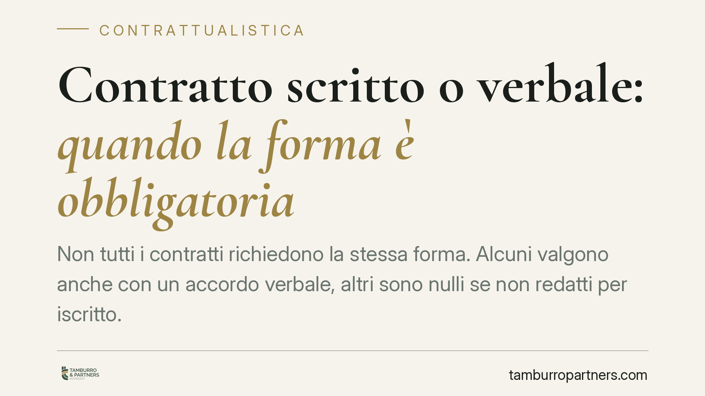

Contratto scritto o verbale: quando la forma è obbligatoria
Non tutti i contratti richiedono la stessa forma. Alcuni valgono anche con un accordo verbale, altri sono nulli se non redatti per iscritto. Distinguere tra forma richiesta per la validità e forma richiesta per la prova è essenziale: da questa differenza dipende la sorte dell'accordo e la possibilità di farlo valere in giudizio.

Il fatto e perché conta
Circola l'idea che un accordo valga solo se messo nero su bianco. Non è così. Nel nostro ordinamento vige il principio di libertà delle forme: un contratto è di regola valido anche se concluso a voce. Le eccezioni, però, sono numerose e pesanti. Ignorarle significa esporsi al rischio che un accordo sia nullo o, pur essendo valido, impossibile da provare in causa.
Inquadramento normativo
L'art. 1325 c.c. elenca i requisiti del contratto e include la forma solo "quando risulta che è prescritta dalla legge sotto pena di nullità". La regola generale, dunque, è la libertà di forma: l'accordo verbale è pienamente valido, salvo diversa previsione.
La principale eccezione è l'art. 1350 c.c., che impone la forma scritta a pena di nullità per una serie tassativa di atti: trasferimenti di beni immobili, costituzione o modifica di diritti reali su immobili, locazioni ultranovennali, e altri elencati dalla norma. Qui la forma è requisito di validità (*forma ad substantiam*): senza scrittura il contratto non esiste giuridicamente.
Diverso è il caso in cui la forma scritta serva solo a provare l'accordo (*forma ad probationem*). Il contratto è valido anche senza scrittura, ma in giudizio la prova per testimoni incontra i limiti dell'art. 2721 c.c. È il caso, ad esempio, del contratto di assicurazione (art. 1888 c.c.) e della transazione (art. 1967 c.c.).
Sul valore probatorio dei documenti, l'art. 2699 c.c. definisce l'atto pubblico, redatto dal notaio o da altro pubblico ufficiale autorizzato, che fa piena prova fino a querela di falso. L'art. 2702 c.c. disciplina la scrittura privata, che fa piena prova della provenienza delle dichiarazioni se la sottoscrizione è riconosciuta o legalmente considerata tale. La Cassazione Civile ha costantemente ribadito la distinzione tra forma per la validità e forma per la prova, evidenziando che le due funzioni non vanno confuse.
Implicazioni pratiche
Per le parti contrattuali le conseguenze sono nette. Se la legge richiede la forma scritta *ad substantiam*, un accordo verbale non produce alcun effetto: non si può sanare con la condotta successiva né provare con testimoni. Un impegno a vendere un immobile concluso solo a parole, per esempio, è tale e quale a un accordo mai stipulato.
Quando invece la forma è richiesta solo *ad probationem*, l'accordo esiste, ma chi vuole farlo valere può trovarsi senza strumenti probatori adeguati. La prova testimoniale è limitata e quella per presunzioni segue le stesse restrizioni. In pratica, senza documento il diritto rischia di rimanere sulla carta.
Rilievo particolare assume il livello del documento. La scrittura privata semplice (art. 2702 c.c.) è sufficiente in molti casi, ma per alcuni atti serve l'intervento del notaio, sia per la trascrizione nei registri immobiliari sia per operazioni con banche e finanziamenti. Un investitore, ad esempio, deve verificare che la documentazione contrattuale abbia la forma idonea a essere opposta a terzi, non solo tra le parti.
Cosa fare in concreto
- Verificate la categoria dell'atto prima di concludere: se rientra nell'elenco dell'art. 1350 c.c., predisponete la forma scritta senza eccezioni.
- Distinguete validità e prova: anche quando l'accordo verbale è valido, consigliamo di formalizzarlo per iscritto per non restare privi di prova in giudizio.
- Valutate il ricorso al notaio quando l'atto deve essere trascritto, opposto a terzi o richiesto da una banca per un finanziamento.
- Curate la sottoscrizione: una scrittura privata prova la provenienza solo se la firma è riconosciuta o autenticata. Conservate le versioni firmate.
- Documentate le trattative e le modifiche: gli accordi successivi che incidono su contratti a forma vincolata richiedono la stessa forma dell'originale.
La scelta della forma non è un formalismo. È la condizione che stabilisce se un accordo esiste e se potrà essere fatto valere. Affrontarla prima della firma, e non dopo il contenzioso, riduce in modo sensibile il rischio.
---
*Contributo informativo a cura di Tamburro & Partners - Avv. Giuseppe Tamburro. Non costituisce parere legale.*
Ogni contratto ha il suo equilibrio.
Se vuoi una revisione delle clausole o una redazione su misura, scrivi allo studio. Ti rispondiamo entro un giorno lavorativo.